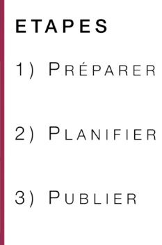

Simple pour l'enseignant


Créer une activité MyDocker et la publier aux étudiants est très simple et se fait en 3 étapes:
- Etape 1 (): Préparez votre TP sur votre ordinateur, et transformez-le en fichier Docker, avec l’aide du service informatique au besoin. La plupart du temps il s’agit juste d’adapter l’un des modèles qui existent déjà dans MyDocker
- Etape 2 () : Planifiez les séances en précisant le nombre d’étudiants pour que les serveurs soient automatiquement réservés
- Etape 3 () : Publiez l’activité directement dans Moodle, les étudiants inscrits au cours y auront accès
N’hésitez pas à prendre rendez-vous sur ce lien pour une présentation de l'outil (30 minutes à 1h), et à envoyer un mail à l’adresse contact.opensource@centralesupelec.fr pour toute question.